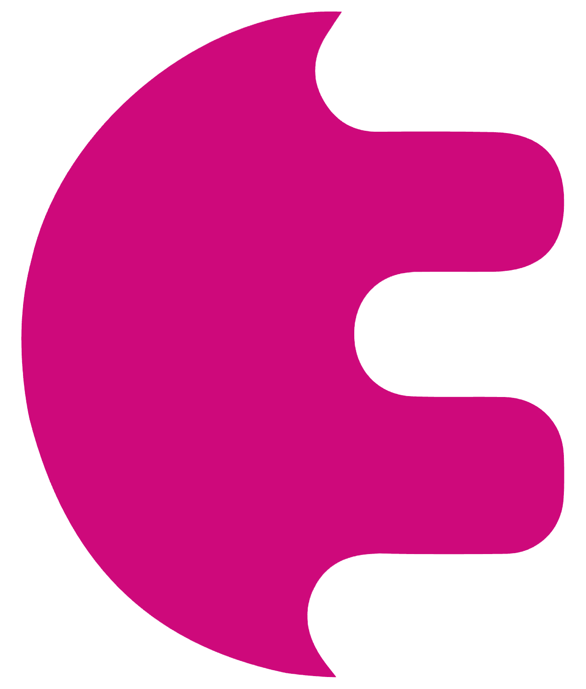

What is EnzymeML?¶
EnzymeML is a standardized data format for catalytic reaction data, designed to ensure consistency and interoperability. It enables researchers to store, share, and enrich reaction data with detailed metadata in JSON or XML formats. Tools for reading and writing EnzymeML simplify data handling and ensure reproducibility, paving the way for data-driven research in biocatalysis.
Why EnzymeML?¶
🧩 Standardization
An EnzymeML Document is a standardized data format. It allows representing all data of a biocatalytic reaction in a consistent structure, independent of the experimental setup.
🔄 Data Exchange
EnzymeML facilitates the sharing of enzyme-catalyzed reaction data across scientists, tools, and databases, enabling collaborative research and integration of diverse datasets.
⚡ Efficiency
Standardization of data formats enables automation of data processing, minimizing manual steps, reducing errors, and saving time.
🌟 FAIR Data
EnzymeML makes data interoperable, constituting an important building block for making data FAIR.
🤖 No data - no AI-party
Structured data is the foundation for making your data compatible with machine learning.
What comprises an EnzymeML Document?¶
An EnzymeML Document organizes and contextualizes data of a biocatalytic reaction. It integrates information about proteins, small molecules (e.g., substrates, products, inhibitors, activators), experimental conditions, and measurement data, providing a structured representation that links these elements seamlessly. The following elements are the key elements of an EnzymeML Document:
-
 Contains information about the enzyme, such as its
Contains information about the enzyme, such as its sequence,EC number,organism, andtaxonomy. -
 Contains information about the small molecules involved in the reaction, such as their
canonical SMILES, orInChI. -
 Contains the
Contains the measurement databesides measurement conditions such astemperatureandpH. -
 Contains information about the reaction, including the involved
Contains information about the reaction, including the involved species(small molecules) andmodifiers. Modifiers can be activating or inhibiting small molecules or proteins. It also specifies whether the reaction isreversibleand provides the reaction equation.
For the full specification of an EnzymeML Document, refer to the EnzymeML Data Model or download it here.